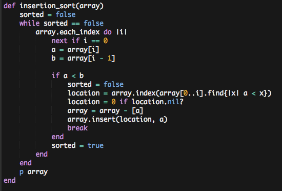

Sorting algorithms: insertion sort
February 24, 2015
Like I mentioned in my bubble sort post, this post is part of a series on search algorithms: something that is CompSci 101, but to me is actually very much new and interesting. And I need the practice.
Today's post deals with the insertion sort. Insertion sort is a sorting algorithm that works by iterating over an array and comparing the current object with the previous one. If the previous object is larger than the current object, the current object is extracted from the array. A search is done from [0..(current object's original index)] to find the smallest item that is larger than the object, and the object is inserted back into the array to the left of the found object.

Its Big-O notation is fairly awful at O(n2), but this is primarily the case with large data sets; at smaller sets, or sets that are already close to sorted, it is adaptive, with a Big-O notation of O(n).
My original design for this algorithm was quite strange; I actually had the current element comparing itself with
the next element rather than the previous one, ending the sort if the next element was nil, and moving
the next element instead of the current one if it was smaller. I went back and rewrote my program completely when I
started writing this post because I reviewed what was actually supposed to be happening. Thanks to Wikipedia for
this awesome animation
that made it much more clear to me what was supposed to be happening inside my algorithm. Lesson learned: first think,
then write. :)
{kind=link}